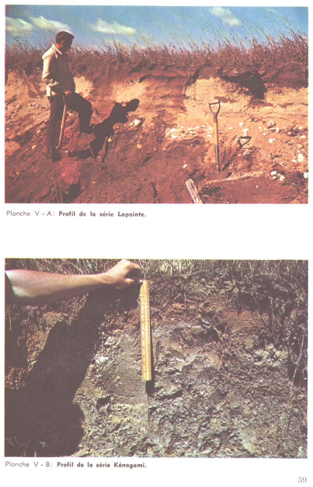

Identification & Caractéristiques Générales
La série Kénogami se développe sur un dépôt quaternaire meuble constitué d'une couverture mince de sable sus-jacente à un substrat argileux marin, l'épaisseur de la strate sableuse variant généralement de 30 à 45 centimètres (12 à 18 pouces). Ces sols occupent les zones de transition morphologique situées entre les plaines argileuses et les formations sableuses plus épaisses, que ce soit en position de plaine ou de coteau. La topographie associée est généralement plane à légèrement ondulée. Cette catena s'observe principalement dans les secteurs physiographiques de Saint-Jean-Vianney, Saint-Ambroise, Saint-Honoré et Chicoutimi-Nord, où elle voisine les séries Parent, Pelletier, Pémonka et Argentenay.
La morphologie du profil pédologique est caractérisée par une texture sablonneuse en surface reposant abruptement sur un sous-sol argileux lourd qui restreint la percolation verticale des eaux. Le drainage naturel varie du bon à l'imparfait selon la toposéquence et la microtopographie, la présence du substrat argileux imperméable induisant fréquemment la formation d'une nappe perchée temporaire au contact des deux matériaux durant les périodes de fonte nivale ou de fortes précipitations. La réaction du sol est généralement acide et la pierrosité est faible à nulle dans le profil supérieur. La perméabilité est modérée dans la couche sableuse superficielle et très lente à nulle dans le substrat argileux sous-jacent.
Sur le plan agronomique, les sols de la série Kénogami présentent des aptitudes modérées pour la production agricole, principalement limitées par l'alternance d'excès d'eau temporaires en surface et de sécheresses estivales inhérentes à la faible épaisseur de la couche sableuse. La mise en valeur culturale requiert l'installation d'un système de drainage souterrain adéquat pour accélérer l'essuyage printanier, ainsi que des pratiques de travail du sol adaptées pour éviter le mélange préjudiciable du substrat argileux avec la couche arable. Un chaulage régulier est nécessaire pour corriger l'acidité naturelle, et un apport suivi en matière organique et en fertilisants s'avère indispensable pour maintenir la structure et la productivité des horizons superficiels.
Caractères Distinctifs & Morphologie Génétique (Comté de Chicoutimi — Page 82)
- Topographie : horizontale à faiblement bombée
- Drainage : bon à imparfait
- Grand-groupe génétique : podzol
- Degré d'érosion : léger (W1-D1)
- Classe d'utilisation : 4
- Association géographique : séries Taillon, Pelletier, Girard
- Végétation naturelle : trembles, bouleaux, sapins, épinettes, aulnes, coudriers, etc.
Classification Taxonomique & Environnement Pédologique
| Ordre Pédologique | Podzolique |
|---|---|
| Grand Groupe (SCSS) | Podzol humo-ferrique |
| Sous-Groupe Taxonomique | Podzol humo-ferrique orthique |
| Famille Pédologique | Sableuse, mixte sableux, acide |
| Mode de Dépôt Parental | Fluviatile sur marin |
| Classe de Drainage Naturel | Modérément bien drainé |
| Régime Thermique & Humidité | Frais / Humide |
Description Morphologique du Profil Type
Séquences génétiques des horizons pédologiques caractérisant le profil type représentatif de la série Kénogami :
Profil forestier / boisé — Comté de Chicoutimi — Phase aurait pu
✓ Source : Comté de Chicoutimi — Page 83Couleur Munsell : 5YR 2/1
Structure & Consistance : Polyédrique à granulaire
Description morphologique : Tourbe et matière organique plus ou moins décomposée noir rougeâtre (5YR 2/1); pH: 4,4.
Couleur Munsell : 5YR 7/2
Structure & Consistance : Polyédrique à granulaire
Description morphologique : Sable fin gris rose (5YR 7/2-6/2); pH: 4,7.
Couleur Munsell : 5YR 4/6
Structure & Consistance : Polyédrique à granulaire
Description morphologique : Sable fin rouge jaune (5YR 4/6); pH: 5,1.
Couleur Munsell : 5YR 5/8
Structure & Consistance : Polyédrique à granulaire
Description morphologique : Sable fin brun vif (7,5YR 5/8); pH: 5,5.
Couleur Munsell : 10YR 6/6
Structure & Consistance : Polyédrique à granulaire
Description morphologique : Sable jaune brun (10YR 6/6); pH: 6,0.
Couleur Munsell : 10YR 8/3
Structure & Consistance : Polyédrique à granulaire
Description morphologique : Sable fin très pâle (10YR 8/3-7/3); pH: 5,5.
Couleur Munsell : 5Y 6/2
Structure & Consistance : Polyédrique à granulaire
Description morphologique : Limon argileux gris brun clair (2,5Y 6/2); pH: 5,1.
Profil représentatif — Pédologie de la région du Lac-Sa
✓ Source : Pédologie de la région du Lac-Sa — Page 95Couleur Munsell : Non précisée
Structure & Consistance : Polyédrique à granulaire
Description morphologique : Tourbe fibro-limoneuse; pH : 5.3.
Couleur Munsell : Non précisée
Structure & Consistance : Polyédrique à granulaire
Description morphologique : Sable gris; pH : 5.1.
Couleur Munsell : 5YR 4/6
Structure & Consistance : Polyédrique à granulaire
Description morphologique : Sable loameux rouge (5YR 4/6); pH : 5.3.
Couleur Munsell : 10YR 5/8, 7.5YR 5/8
Structure & Consistance : Polyédrique à granulaire
Description morphologique : Sable loameux brun-jaune (10YR 5/8) avec taches brun vif (7.5YR 5/8); pH : 5.6.
Couleur Munsell : 10YR 6/6, 10YR 5/8
Structure & Consistance : Polyédrique à granulaire
Description morphologique : Sable jaune-brun (10YR 6/6) avec taches brun-jaune (10YR 5/8); pH : 6.0.
Couleur Munsell : 10YR 6/3, 10YR 6/4
Structure & Consistance : Polyédrique à granulaire
Description morphologique : Sable loameux brun pâle (10YR 6/3) avec taches brun-jaune clair (10YR 6/4); pH : 5.8.
Couleur Munsell : Non précisée
Structure & Consistance : Polyédrique à granulaire
Description morphologique : Argile grise; pH : 5.2.
Profils Photographiques & Planches de Terrain
Documents iconographiques, figures pédologiques et coupes de terrain documentées dans les mémoires d'inventaire pour de la série Kénogami :


Propriétés Physico-Chimiques & Analyses de Laboratoire
| Horizon | Prof. (pces/cm) | Sable % | Limon % | Argile % | pH | C % | N % | Ca éch. | Mg éch. | K éch. | H+ éch. | Bases tot. | C.E.C. (meq/100g) | Saturation % | ||
|---|---|---|---|---|---|---|---|---|---|---|---|---|---|---|---|---|
| L-H | 1-2/2,5-5 | — | — | — | 4,6 | 45,03 | 1,60 | 16,2 | 6,3 | 2,15 | 62,4 | 24,7 | 87,1 | 28,3 | ||
| Ae | 1-1½2,5-3,5 | 81,0 | 16,8 | 2,2 | 4,7 | 0,65 | 0,04 | 0,4 | 0,3 | 0,10 | 2,8 | 0,8 | 3,8 | 22,2 | ||
| Bf1 | 1/2,5 | 90,0 | 7,2 | 2,8 | 5,1 | 2,09 | 0,07 | 0,7 | 0,3 | 0,13 | 8,5 | 1,1 | 9,6 | 11,4 | ||
| Bf2 | 4/10 | 93,0 | 5,4 | 1,6 | 5,5 | 1,06 | 0,03 | 0,4 | 0,3 | 0,03 | 2,4 | 0,7 | 3,1 | 22,6 | ||
| C1 | 2/5 | 97,4 | 1,4 | 1,2 | 6,0 | 0,65 | 0,01 | 0,2 | 0,2 | 0,03 | 1,0 | 0,4 | 1,4 | 28,5 | ||
| C2 | 1/2,5 | 93,0 | 5,6 | 1,4 | 5,5 | 0,18 | 0,02 | 0,2 | 0,2 | 0,03 | 0,2 | 0,4 | 0,6 | 66,6 | ||
| D | à 12/à 30 | 20,0 | 56,4 | 23,6 | 5,1 | 0,57 | 0,03 | 0,4 | 0,2 | 0,18 | 2,7 | 0,8 | 3,5 | 22,8 |
Particularités Régionales, Phases & Variantes Pédologiques
Déclinaisons régionales, faciès texturaux, phases d'érosion ou de pierrosité et variantes cartographiées par étude pour de la série Kénogami :
| Étude Régionale | Symbole | Appellation / Phase / Variante | Différenciation avec la série type (Analyse pédologique) |
|---|---|---|---|
| Comté de Chicoutimi | K |
Kénogami sable | Modalité modale de référence (type de base de la série). |
Kg |
Kénogami sable grossier | Faciès textural de surface sable grossier (distinct du sable de référence). | |
| Pédologie de la région du Lac-Saint-Jean | K |
Kénogami sable | Conforme à la série type de référence (caractéristiques texturales et drainage identiques). |
Distribution Pédo-Paysagère & Représentativité Cartographique (Couverture PPS 2026)
- Taillon loam (TLL) — co-occurrente dans 55 polygone(s)
- Mistouc argile (MTU) — co-occurrente dans 45 polygone(s)
- Alluvion non différenciée à surface sableuse (ALL) — co-occurrente dans 41 polygone(s)
Aptitudes Agronomiques, Hydropédologie & Conservation des Sols
Indicateurs Hydropédologiques & Vulnérabilité à l'Érosion (BDHP 2026)
Interprétation BDHP : Potentiel de ruissellement faible. Sols à infiltration rapide (sables profonds, graviers bien drainés).
Classement selon l'Inventaire des Terres du Canada (ITC / CLI) : Classe 3m.
- Potentiel agricole : Terroir adapté aux cultures régionales selon la texture dominante et la régie de drainage.
- Contraintes majeures : Modérément bien drainé. Risque d'engorgement temporaire ou d'excès d'eau printanier.
- Gestion & Aménagement : Drainage souterrain ou superficiel préconisé sur les terres planes. Chaulage et apport organique régulier selon les bilans agronomiques.
- Cultures adaptées : Grandes cultures (maïs, soya, céréales), prairies fourragères et cultures maraîchères selon le contexte géomorphologique.